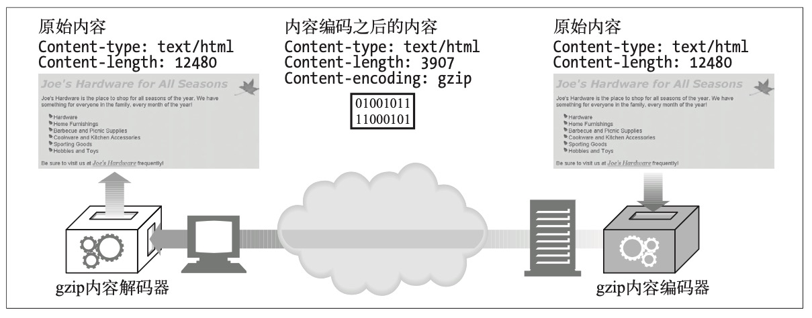
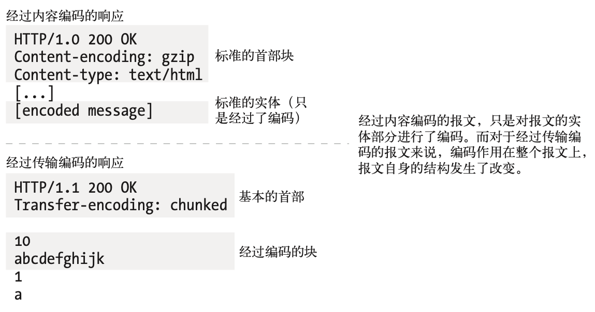
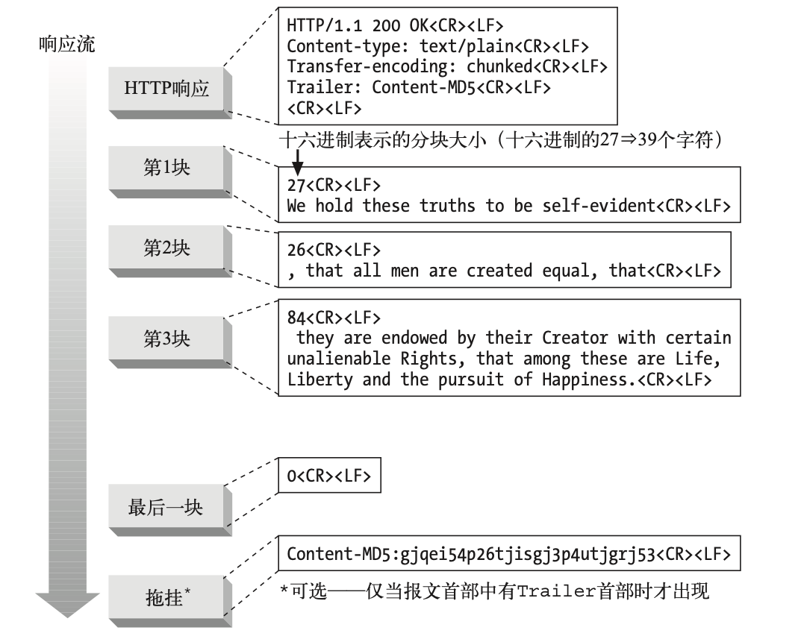

实体和编码
报文是箱子，实体是货物
- Example
http/1.0 200 ok
server: GWS
Content-Type: text/plain
Content-length: 18
Hi! I'm a message!
从 Content-type 开始到结束都是实体， header 部分是实体首部， body 部分是实体主体
HTTP 实体首部描述了 HTTP 报文的内容。 HTTP/1.1 版定义了以下 10 个基本字体首部字 段。
- Content-Type 实体中所承载对象的类型。
- Content-Length 所传送实体主体的长度或大小。
- Content-Language 与所传送对象最相配的人类语言。
- Content-Encoding 对象数据所做的任意变换(比如，压缩)。
- Content-Location 一个备用位置，请求时可通过它获得对象。
- Content-Range 如果这是部分实体，这个首部说明它是整体的哪个部分。
- Content-MD5 实体主体内容的校验和。
- Last-Modified 所传输内容在服务器上创建或最后修改的日期时间。
- Expires 实体数据将要失效的日期时间。
- Allow 该资源所允许的各种请求方法，例如，GET 和 HEAD。
- ETag 这份文档特定实例(参见 15.7 节)的唯一验证码。ETag 首部没有正式定义为实 体 首部，但它对许多涉及实体的操作来说，都是一个重要的首部。
- Cache-Control 指出应该如何缓存该文档。和 ETag 首部类似，Cache-Control 首部也没 有正 式定义为实体首部。
确定实体主体长度的规则
- 如果特定的 HTTP 报文类型中不允许带有主体，就忽略 Content-Length 首 部，它是对 (没有实际发送出来的)主体进行计算的。这种情况下，Content- Length 首部是提示性 的，并不说明实际的主体长度。(考虑不周的 HTTP 应用 程序会认为有了 Content-Length 就有主体存在，这样就会出问题。)
最重要的例子就是 HEAD 响应。HEAD 方法请求服务器发送等价的 GET 请 求中会出现的首 部，但不要包括主体。因为对 GET 的响应会带有 Content- Length 首部，所以 HEAD 响应 里面也有;但和 GET 响应不同的是，HEAD 响应中不会有主体。1XX、204 以及 304 响应也 可以有提示性的 Content- Length 首部，但是也都没有实体主体。那些规定不能带有实体 主体的报文， 不管带有什么首部字段，都必须在首部之后的第一个空行终止。
-
如果报文中含有描述传输编码的 Transfer-Encoding 首部(不采用默认的 HTTP“恒等”编 码)，那实体就应由一个称为“零字节块”(zero-byte chunk) 的特殊模式结束，除非报文 已经因连接关闭而结束。我们将在本章后面讨论传 输编码和分块编码。
-
如果报文中含有 Content-Length 首部(并且报文类型允许有实体主体)，而且没有非恒 等的 Transfer-Encoding 首部字段，那么 Content-Length 的值就是主体的长度。如果 收到的报文中既有 Content-Length 首部字段又有非恒等的 Transfer-Encoding 首部字 段，那就必须忽略 Content-Length，因为 传输编码会改变实体主体的表示和传输方式( 因此可能就会改变传输的字节数
-
如果报文使用了 multipart/byteranges(多部分 / 字节范围)媒体类型，并且没有用 Content-Length 首部指出实体主体的长度，那么多部分报文中的每个部 分都要说明它 自己的大小。这种多部分类型是唯一的一种自定界的实体主体类 型，因此除非发送方知 道接收方可以解析它，否则就不能发送这种媒体类型。
- 因为 Range 首部可能会被不理解多部分 / 字节范围的更原始的代理所转发，所以如果发 送方不能确 定接收方是否理解这种自定界的格式的话，就必须用本节的方法(1)、(3)或 (5)来对报文定界。
- 如果上面的规则都不匹配，实体就在连接关闭的时候结束。实际上，只有服务 器可以使 用连接关闭来指示报文的结束。客户端不能用关闭连接来指示客户端
- 客户端可以使用半关闭，也就是只把连接的输出端关闭，但很多服务器应用程序设计的时 候没有考虑 到处理这种情况，会把半关闭当作客户端要从服务器断开连接来处理。HTTP 没有对连接管理进行良 好的规范。详情请参见第 4 章。
媒体类型和字符集
Content-Type 首部字段说明了实体主体的 MIME 类型。 MIME 类型是标准化的名字，用以 说明作为货物运载实体的基本媒体类型。客户端应用程序使用 MIME 类型来解释和处理其 内容。
Content-Type 的值是标准化的 MIME 类型，都在互联网号码分配机构(Internet Assigned Numbers Authority，简称 IANA)中注册。 MIME 类型由一个主媒体类 型(比如 :text、image 或 audio 等)后面跟一条斜线以及一个子类型组成，子类 型用于进一步描述 媒体类型。
内容编码

内容编码类型
HTTP 定义了一些标准的内容编码类型，并允许用扩展编码的形式增添更多的编码。由互联 网号码分配机构(IANA)对各种编码进行标准化，它给每个内容编码算法分 配了唯一的代号 。
- gzip RFC1952 gzip 编码
- compress Unix 文件压缩
- deflate RFC1950 和 1951 讲解 zlib 和 deflate
- identity 没有编码
Accept-Encoding
为了避免服务器使用客户端不支持的编码方式，客户端就把自己支持的内容编码方式列表放 在请求的 Accept-Encoding 首部里发出去。如果 HTTP 请求中没有包含 Accept-Encoding 首部，服务器就可以假设客户端能够接受任何编码方式(等价 于发送 Accept-Encoding: *)。
Example:
Accept-Encoding: compress, gzip
Accept-Encoding:
Accept-Encoding: *
Accept-Encoding: compress;q=0.5, gzip;q=1.0
Accept-Encoding: gzip;q=1.0, identity; q=0.5, *;q=0
Q 值的范围从 0.0 到 1.0，0.0 说明客户端不想接受所说明的编码，1.0 则表明最希望使 用的编码。 “*”表示“任何其他方法”。
传输编码和分块编码
传输编码也是作用在实体主体上的可逆变换，但使用它们是由 于架构方面的原因，同内容 的格式无关。

可靠传输
- 未知尺寸如果不先生成内容，某些网关应用程序和内容编码器就无法确定报文主体的最终 大小。通常，这些服务器希望在知道大小之前就开始传输数据。因为 HTTP 协议 354 要 求 Content-Length 首部必须在数据之前，有些服务器就使用传输编码来发送数据，并用 特别的结束脚注表明数据结束。
- 安全性你可以用传输编码来把报文内容扰乱，然后在共享的传输网络上发送。
Transfer-Encoding Headers
- Transfer-Encoding 告知接收方为了可靠地传输报文，已经对其进行了何种编码。
- TE 用在请求首部中，告知服务器可以使用哪些传输编码扩展。
请求使用了 TE 首部来告诉服务器它可以接受分块编码(如果是 HTTP/1.1 应用程序的话， 这就是必须的)并且愿意接受附在分块编码的报文结尾上的拖挂:
GET /new_products.html HTTP/1.1
Host: www.gsmiot.com
User-Agent: Mozilla/4.61 [en] (WinNT; I)
TE: trailers, chunked
...
分块编码
分块编码把报文分割为若干个大小已知的块。块之间是紧挨着发送的，这样就不需要在发送 之前知道整个报文的大小了。

随时间变化的实例
HTTP 协议规定了称为实例操控(instance manipulations)的一系列请求和响应操 作，用以 操控对象的实例。两个主要的实例操控方法是范围请求和差异编码。这两 种方法都要求客 户端能够标识它所拥有(如果有的话)的资源的特定副本，并在一定的条件下请求新的实例。
验证码和新鲜度
服务器应当告知客户端能够将内容缓存多长时间，在这个时间之内就是新鲜的。服务器可以 用这两个首部之一来提供这种信息:
- Expires(过期)
- Cache- Control(缓存控制)
有条件的请求与验证码
| 请求类型 | 验证码 | 描述 |
|---|---|---|
| If-Modified-Since | Last-Modified | 如果在前一条响应的 Last-Modified 首部中说明的 时间之后，资源的版本发生变化，就发送其副本 |
| If-Unmodified-Since | Last-Modified | 仅在前一条响应的 Last-Modified 首部中说明的时 间之后，资源的版本没有变化，才发送其副本 |
| If-Match | ETag | 如果实体的标记与前一次响应首部中的 ETag 相同， 就发送该资源的副本 |
| If-None-Match | ETag | 如果实体的标记与前一次响应首部中的 ETag 不同， 就发送该资源的副本 |
范围请求
有了范围请求，HTTP 客户端可以通过请求曾获取失败的实体的一个范围(或者说 一部分)， 来恢复下载该实体。
Example:
GET /bigfile.html HTTP/1.1
Host: www.gsmiot.com
Range: bytes=4000-
User-Agent: Mozilla/4.61 [en] (WinNT; I)
...
对于客户端在一个请求内请求多个不同范围的情况，返回的响应也是单个实体，它有一个多 部分主体及 Content-Type: multipart/byteranges 首部。
服务器可以通过在响应中包含 Accept-Ranges 首部的形式向客户端说明可以接受的范围请 求。这个首部的值是计算范围的单位，通常是以字节计算的。
差异编码
差异编码也是一类实例操控，因为它依赖客户端和服务器之间针对特定的对象实例来交换信 息。RFC 3229 描述了差异编码。
如果客户端想告诉服务器它愿意接受该页面的差异，只要发送 A-IM 首部就可以了。 A-IM 是 Accept-Instance-Manipulation(接受实例操控)的缩写。形象比喻的话，客户端相当于 这样说:“哦对了，我能接受某些形式的实例操控，如果你会其中一种的话，就不用发送完整 的文档给我了。” 在 A-IM 首部中，客户端会说明它知道哪些算法可以把差异应用于老版本 而得到最新版本。服务端发送回下面这些内容: 一个特殊的响应代码——226 IM Used，告知 客户端它正在发送的是所请求对象的实例操控，而不是那个完整的对象自身; 一个 IM(Instance-Manipulation 的缩写) 首部，说明用于计算差异的算法; 新的 ETag 首部和 Delta-Base 首部，说明用于计算差异的基线文档的 ETag(理论上，它应该和客户端之前请 求里的 If-None- Match 首部中的 ETag 相同!)。
差异编码所用的首部
| 首部 | 描述 |
|---|---|
| ETag | 文档每个实例的唯一标识符。由服务器在响应中发送;客户端在后继请求的 If-Match 首部和 If-None-Match 首部中可以使用它 |
| If-None-Match | 客户端发送的请求首部，当且仅当客户端的文档版本与服务器不同时，才向服务 器请求该文档 |
| A-IM | 客户端请求首部，说明可以接受的实例操控类型 |
| IM | 服务器响应首部，说明作用在响应上的实例操控的类型。当响应代码是 226 IM Used 时，会发送这个首部 |
| Delta-Base | 服务器响应首部，说明用于计算差异的基线文档的 ETag 值(应当与客户端请求中的 If-None-Match 首部里的 ETag 相同) |
实例操控、差异生成器和差异应用器
客户端可以使用 A-IM 首部说明可以接受的一些实例操控的类型。一些在 IANA 注册的实例 操控类型。
| 类型 | 说明 |
|---|---|
| vcdiff | 用 vcdiff 算法计算差异 (vcdiff 的规范由 RFC3284 发布) |
| diffe | 用 Unix 系统的 diff-e 命令计算差异 |
| gdiff | 用 gdiff 算法计算差异 link |
| gzip | 用 gzip 算法压缩 |
| deflate | 用 deflate 算法压缩 |
| range | 用在服务器的响应中，说明响应是针对范围选择得到的部分内容 |
| identity | 用在客户端请求中的 A-IM 首部中，说明客户端愿意接受恒等实例操控 |
更多信息
关于实体和编码方面的更多信息，请参考以下资源。
- http://www.ietf.org/rfc/rfc2616.txt RFC 2616，也就是 HTTP/1.1 版的规范，是实体 主体管理和编码方面的主要参考。
- http://www.ietf.org/rfc/rfc3229.txt RFC 3229，“Delta Encoding in HTTP”(“HTTP 中的差异编码”)，说明了如何通 过扩展 HTTP/1.1 来支持差异编码。
- Introduction to Data Compression11(《数据压缩导论》) 这本书的作者是 Khalid Sayood，出版商为 Morgan Kaufmann Publishers。该书介 绍了几种 HTTP 内容编码支持 的压缩算法。
- http://www.ietf.org/rfc/rfc1521.txt RFC 1521，“Multipurpose Internet Mail Extensions, Part One: Mechanisms for Specifying and Describing the Format of Internet Message Bodies”(“ 多 用 途 因 特网邮件扩展，第一部分:规定和描述因特网 报文主体格式的机制”)，描述了 MIME 主体的格式。这份参考材料很有用，因为 HTTP 从 MIME 中借用了大量内容。设计这份文档的目的，就是为了提供在单一报文中包含多个对 象的各种设施，比如用 US-ASCII 之外的字符集来表示主体文本，表示多种字体格式的文 本消息以及表示非文本类的信息，比如图像和声音片段等。
- http://www.ietf.org/rfc/rfc2045.txt RFC 2045，“Multipurpose Internet Mail Extensions, Part One: Format of Internet Message Bodies”(“多用途因特网邮件扩展 ，第一部分:因特网报文主体的格 式”)，规定了用来描述 MIME 格式报文结构的各种首部 ，其中许多都和 HTTP 中的用法类似或相同。
- http://www.ietf.org/rfc/rfc1864.txt RFC 1864，“The Content-MD5 Header Field”(“Content-MD5 首部字段”)，提 供了用 Content-MD5 首部字段来做报文完整性检 查的行为及用途方面的一些历史 细节。
- http://www.ietf.org/rfc/rfc3230.txt RFC 3230，“Instance Digests in HTTP”(“HTTP 中 的 实 例 摘 要 ”)， 描 述 了 对 HTTP 实体摘要处理的改进，解决了 Content-MD5 中存在的各种问题。